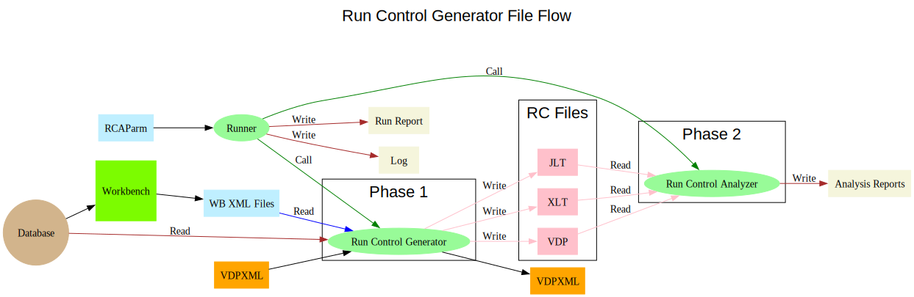
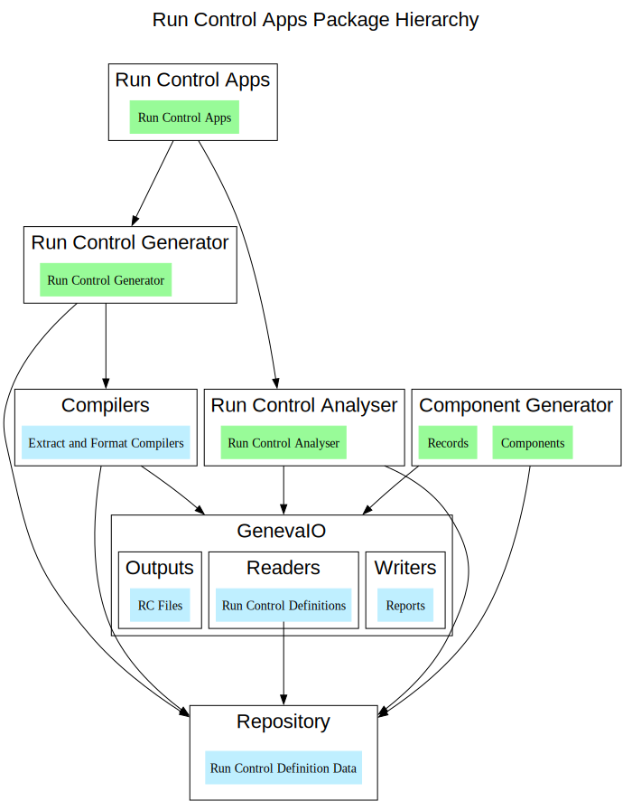

The Run Control Apps implement the first part of the GenevaERS Performance Engine workflow.
It's main function is to read the definition of the data transfers required and generate the Run Control files to manage the Performance Engine data flow.
The Run Control Apps process Run Control Definition data in one or two phases.
The required phases and input sources are defined in an RCA Parm file.
The data defining the required RC Files is read directly from a database, or read from an XML file definition, and generates the Run Control (RC) Files.
The set of Run Control (RC) Files is read and processed to write the Analysis Reports.
Only Phase 1 is required for the Performance Engine workflow.
Phase 2 may be run on its own to produce an analysis of a previously generated set of RC Files.
On completion of the one or two phases a report file detailing what was done is written. A more detailed Log file is also generated for debugging purposes.
{@link org.genevaers.rcapps.Runner} is the main class of the RCApps. It reads the RCAPARM using the {@link org.genevaers.utilities.ParmReader} and executes the defined phases.
The {@link org.genevaers.runcontrolgenerator.RunControlGenerator} and {@link org.genevaers.runcontrolanalyser.RunControlAnalyser} provide the main functions.
The Workbench is an Eclipse based application to manage the contents of the Database. See @see https://github.com/genevaers/Workbench
The Workbench can export selected contents in the form of a WB XML file. Which can later be used as input to the RunControlGenerator.
The database, either Db2 or Posgress, is used to store the Run Control Definition data.
The {@link org.genevaers.genevaio.dbreader.DBReader} class provides the mechanism to read the data directly from the database.
The Run Control Apps also supports a legacy data flow base on VDP XML files.
The files may be both generated and read by the {@link org.genevaers.runcontrolgenerator.RunControlGenerator}.
The code for the Run Control Apps is contained in a series of projects.
The diagram below attempts to capture the hierarchy.
Note we use a Component Generator in order to avoid repeated manual maintenance of the records and components of the system.
It generates the classes and enums that model the Run Control Data used in the GenevaIO package and the Repository.
More details can be found in {@link ComponentGenerator}.
The following base level packages provide the framework for the RC Apps
{@link org.genevaers.rcapps} holds the main function and is the starting point for a run.
{@link org.genevaers.runcontrolgenerator} processes the Run Control Data definitions.
{@link org.genevaers.runcontrolanalyser} processes the Run Control Files.
{@link org.genevaers.compilers.extract} and {@link org.genevaers.compilers.format} a major part of the processing is in the compilation of logic text defining how data is transformed and moved.
{@link org.genevaers.genevaio.dbreader}, {@link org.genevaers.genevaio.vdpfile} and {@link org.genevaers.genevaio.ltfile} packages to hold the classes that read and write the RC data.
{@link org.genevaers.repository} package to keep an in memory store of the data required.